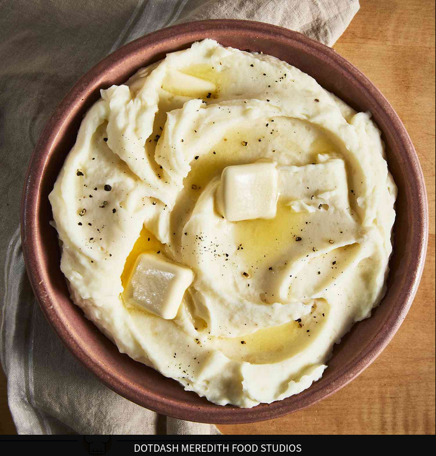

Basic Mashed Potatoes

Description
This mashed potato recipe is perfect if you're looking for good,
old-fashioned mashed potatoes. Made with just potatoes, milk,
butter, and optional garlic, this go-to recipe makes a classic
holiday dish. Learn how to make mashed potatoes that come out
smooth, creamy, and delicious every time! Serve with
gravy or extra butter on top.
Ingredients
2 pounds baking potatoes, peeled and quartered
3 cloves garlic, peeled, or to taste (Optional)
salt and ground black pepper to taste
Steps
- Gather all ingredients.
- Bring a large pot of salted water to a boil. Add potatoes and garlic, lower heat to medium, and simmer until potatoes are tender, 15 to 20 minutes.
- When the potatoes are almost finished, heat milk and butter in a small saucepan over low heat until butter is melted.
- Drain potatoes and return to the pot. Slowly add warm milk mixture, blending it in with a potato masher or electric mixer until potatoes are smooth and creamy.
- Season with salt and pepper. Serve and enjoy!
Home